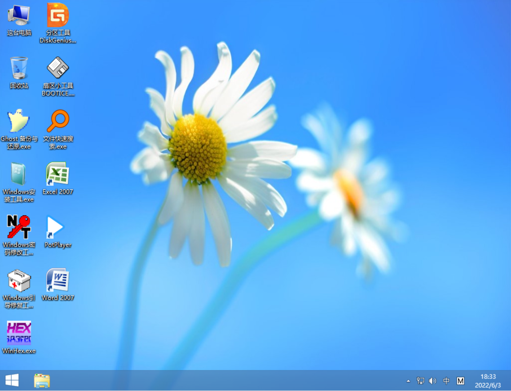
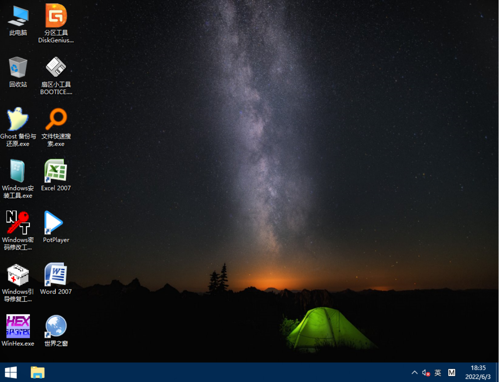

ToBePE，一款简洁但功能强大的Windows PE
注意事项
RE版本是低配机适用，Windows 8.1内核，并且只支持Laugcy启动模式，但支持LogonUI。
文件名没有带RE的版本是Windows 10内核，不支持LogonUI和网络，但支持支持UEFI+Laugcy两种启动模式。
图片预览

ToBePE RE版本

ToBePE普通版本
普通版本大小为924MB，RE版本为826MB，下载下来的格式为ISO
硬件要求
如果想要快一点加载，那么内存至少要2GB或更高。在运行普通版本时，CPU最好多于单个核心，否则会非常卡顿。（RE版本可以在单核CPU下流畅加载）
如果你使用的是WiFi，诸如笔记本用户，网络将无法正常加载
点击此处获取ToBePE